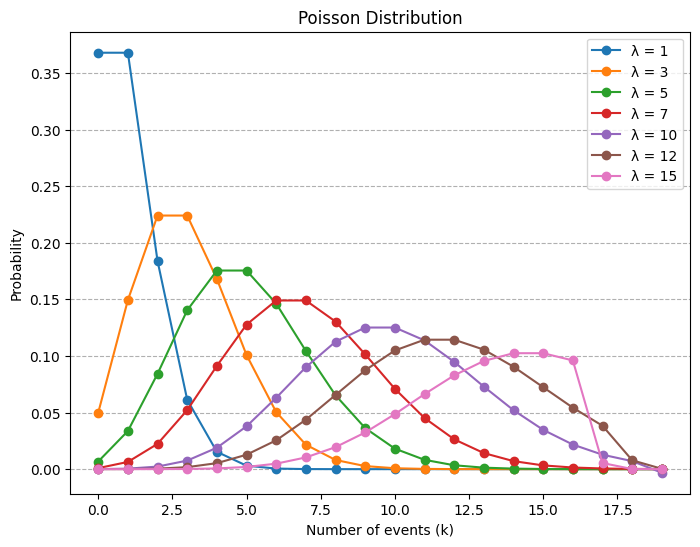
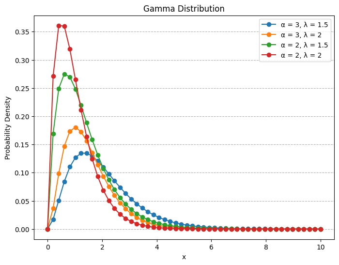
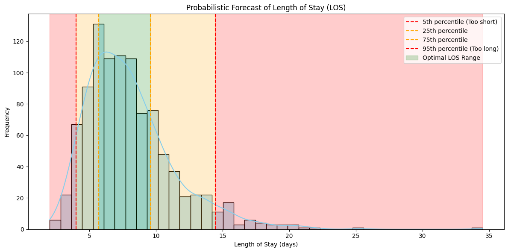
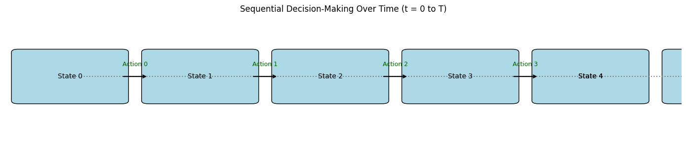

def poisson(m, k):
"""
Calculate the Poisson probability of observing k events in an interval
given the average rate of occurrence n.
:param m: Average rate of occurrence (lambda)
:param k: Number of events
:return: Probability of observing k events
"""
from math import exp, factorial
return (m ** k) * exp(-m) / factorial(k)Distributions
talks
The Poisson Random Variable
A random variable \(X\) taking on one of the values \(0, 1, 2, \dots,\) is said to be a Poisson random variable with parameter \(\lambda\), if for some \(\lambda > 0\),
\[ p(i) = P \{ X = i \} = e^{-\lambda} \frac{\lambda^i}{i!}, \quad i = 0, 1, \ldots \]
import numpy as np
import matplotlib.pyplot as plt
import seaborn as sns
# from scipy.stats import poisson
# Example usage
x = np.arange(0, 20) # Average rate of occurrence
lambdas = [1, 3, 5, 7, 10, 12,15] # Different values of lambda
plt.figure(figsize=(8, 6))
for lam in lambdas:
pmf = [poisson(lam, k) for k in x]
# Using scipy's poisson distribution for comparison
# pmf_scy = poisson.pmf(x, lam)
plt.plot(x, pmf, marker='o', label=f'λ = {lam}')
plt.xlabel('Number of events (k)')
plt.ylabel('Probability')
plt.title('Poisson Distribution')
plt.grid(axis= "y" , linestyle='--')
plt.legend()
plt.show()
Continuous Random Variables
The function \(f(x)\) is called the probability density function of the random variable \(X\). \[ P \{X \in B \} = \int_B f(x) dx \tag{1} \]
The probability that \(X\) will be in \(B\) may be obtained by integrating the probability density function over the set \(B\).
\[ P\{X \in (-\infty, \infty)\} = \int_{-\infty}^{\infty} f(x) \, dx = 1 \]
All probability statements about \(X\) can be answered in terms of \(f(x)\). For instance, letting \(B = [a, b]\), we obtain
\[ P\{a \leq X \leq b \} = \int_a^b f(x) \, dx \tag{2} \]
The relationship between the cumulative distribution \(F(\cdot)\) and the probability density \(f(\cdot)\) is expressed by
\[ F(\alpha) = P\{X \in (-\infty, \alpha]\} = \int_{-\infty}^{\alpha} f(x) \, dx \]
Differentiating both sides of the preceding yields \[ \frac{d}{d\alpha} F(\alpha) = f(\alpha) \]
That is, the density is the derivative of the cumulative distribution function. A somewhat more intuitive interpretation of the density function may be obtained from Equation (2) as
\[ P\{\alpha-\frac{\epsilon}{2} \leq X \leq \alpha+\frac{\epsilon}{2} \} = \int_{\alpha-\frac{\epsilon}{2}}^{a+\frac{\epsilon}{2}} f(x) \, dx \approx \epsilon f(x) \]
when \(\epsilon\) is small. In other words, the probability that \(X\) will be contained in an interval of length \(\epsilon\) around the point \(\alpha\) is approximately \(\epsilon f(a)\).
Exponential Random Variables
A continuous random variable whose probability density function is given, for some \(\lambda > 0\), by: \[ f(x) = \begin{cases} \lambda e^{-\lambda x} & x \geq 0 \\ 0 & x < 0 \end{cases} \]
is said to be an exponential random variable with parameter \(\lambda\), which is the mean of the distribution. The cumulative distribution function is given by
\[ F(\alpha) = \int_0^\alpha \lambda e^{-\lambda x} \, dx, = 1-e^{-\lambda \alpha} \quad \alpha \geq 0 \]
Note that \(F(\infty) = \int_0^\infty \lambda e^{-\lambda x} \, dx = 1\).
def exponential(x, m):
"""
Calculate the Exponential probability density function (PDF) for a given x and rate parameter m.
:param x: Value at which to evaluate the PDF
:param m: Rate parameter (1/lambda)
:return: Probability density at x
"""
from math import exp
return m * exp(-m * x) if x >= 0 else 0x = np.linspace(0, 10, 50)
lamdas = [0.1, 0.5, 1, 3, 5] # Different values of lambda
plt.figure(figsize=(8, 6))# Plotting the Exponential distribution
for lam in lamdas:
pdf = [exponential(i, lam) for i in x]
plt.plot(x, pdf, marker='o', label=f'λ = {lam}')
plt.xlabel('x')
plt.ylabel('Probability Density')
plt.title('Exponential Distribution')
plt.grid(axis= "y" , linestyle='--')
plt.legend()
plt.show()
Gamma Random Variables
A continuous random variable whose density is given by: \[ f(x) = \begin{cases} \frac{\lambda e^{- \lambda x} {(\lambda x)}^{\alpha-1}}{\Gamma (\alpha)} & x \geq 0 \\ 0 & x < 0 \end{cases} \]
for some \(\lambda>0\) and \(\alpha>0\) is said to be a gamma random variable with parameters \(\alpha, \lambda\).
The quantity \(\Gamma (\alpha)\) is called the gamma function and is defined by
\[ \Gamma (\alpha) = \int_0^\infty e^{-x} x^{\alpha-1} \, dx = (\alpha-1)! \]
def gamma(x, alpha, lamd):
"""
Calculate the Gamma probability density function (PDF) for a given x, shape parameter alpha, and scale parameter lamd.
:param x: Value at which to evaluate the PDF
:param alpha: Shape parameter (alpha)
:param lamd: Scale parameter (lamda)
:return: Probability density at x
"""
from math import exp, factorial
return (lamd*exp(-lamd*x)*((lamd*x)**(alpha-1)))/factorial(alpha) if x >= 0 else 0x = np.linspace(0, 10, 50) # Range of x values for the gamma distribution
alpha_values = [3, 2] # Different values of alpha (shape parameter)
lambdas = [1.5, 2] # Different values of lambda (scale parameter)
plt.figure(figsize=(8, 6)) # Plotting the Gamma distribution
for alpha in alpha_values:
for lam in lambdas:
pdf = [gamma(i, alpha, lam) for i in x]
plt.plot(x, pdf, marker='o', label=f'α = {alpha}, λ = {lam}')
plt.xlabel('x')
plt.ylabel('Probability Density')
plt.title('Gamma Distribution')
plt.grid(axis= "y" , linestyle='--')
plt.legend()
plt.show()
Normal Random Variables
We say that \(X\) is a normal random variable (or simply that \(X\) is normally distributed) with parameters \(\mu\) and \(\sigma ^2\) if the density of X is given by \[ f(x) = \frac{1}{\sqrt{2 \pi \sigma^2}} e^{-\frac{(x - \mu)^2}{2 \sigma^2}} \quad -\infty < x < \infty \]
This density function is a bell-shaped curve that is symmetric around \(\mu\).
import numpy as np
import matplotlib.pyplot as plt
import seaborn as sns
import pandas as pdWe treat the discharge decision as a dynamic process—meaning it depends on how a patient’s situation changes over time. We predict all most probable predictions of LOS during admission. Based on this, we give a reward (or penalty) depending on whether a patient stays too little, too long, or just the right amount of time. Our model tracks each patient’s health, their care team, how long they’ve been in the hospital, and the availability of resources.
np.random.seed(42)
n_samples = 1000
# Simulate a log-normal distribution for LOS to reflect typical hospital stay skew
los_forecast = np.random.lognormal(mean=2, sigma=0.4, size=n_samples)
# Compute quantiles
q05 = np.quantile(los_forecast, 0.05)
q25 = np.quantile(los_forecast, 0.25)
q75 = np.quantile(los_forecast, 0.75)
q95 = np.quantile(los_forecast, 0.95)
# Create a DataFrame for plotting
df = pd.DataFrame({'LOS': los_forecast})
# Plot
plt.figure(figsize=(12, 6))
sns.histplot(df['LOS'], kde=True, color='skyblue', bins=40)
# Highlight quantiles
plt.axvline(q05, color='red', linestyle='--', label='5th percentile (Too short)')
plt.axvline(q25, color='orange', linestyle='--', label='25th percentile')
plt.axvline(q75, color='orange', linestyle='--', label='75th percentile')
plt.axvline(q95, color='red', linestyle='--', label='95th percentile (Too long)')
# Fill areas
plt.axvspan(df['LOS'].min(), q05, color='red', alpha=0.2)
plt.axvspan(q05, q25, color='orange', alpha=0.2)
plt.axvspan(q25, q75, color='green', alpha=0.2, label='Optimal LOS Range')
plt.axvspan(q75, q95, color='orange', alpha=0.2)
plt.axvspan(q95, df['LOS'].max(), color='red', alpha=0.2)
plt.title('Probabilistic Forecast of Length of Stay (LOS)')
plt.xlabel('Length of Stay (days)')
plt.ylabel('Density (Frequency)')
plt.legend()
plt.tight_layout()
plt.show()
